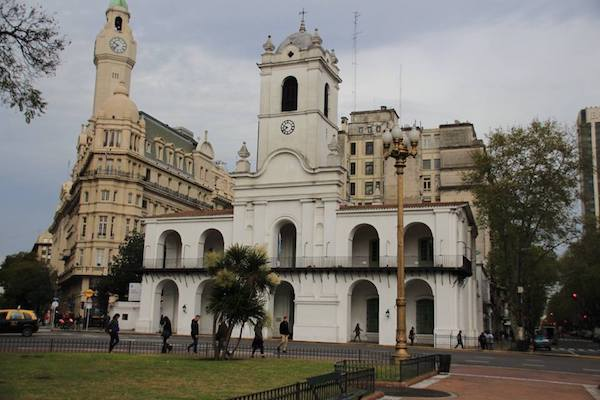
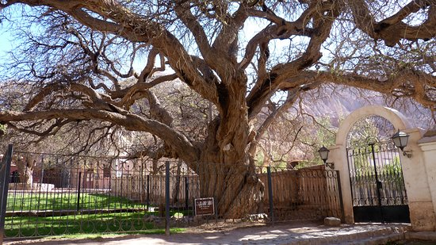
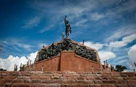

Informacion de JUJUY
Situada en la Región del Norte Grande Argentino, al iniciarse la conquista española, estas tierras ya estaban pobladas por diversos pueblos originarios, en especial quechuas.
En la lucha por la independencia, el pueblo jujeño, a instancias de Belgrano, protagonizó una de las gestas más valerosas de la historia argentina, cuyo sacrificio se vio coronado por las victorias decisivas de Tucumán y Salta.
En cuanto al clima, presenta una variedad de subtropical con estación seca, con un promedio anual de 18º C. de temperatura, con máximas de 32º C. en verano. Las precipitaciones son escasas en invierno y abundantes en la estación estival, especialmente en el Sudeste del territorio.
Lugares turísticos
-

Cabildo Colonial
Es un cabildo pequeño que se construyó en el siglo XIX mientras se celebraban las fiestas de la Revolución de Mayo, este lugar es considerado el más pequeño de Argentina y es uno de los 10 que todavía existen en el país. Al conocer este espacio te envolverás en la historia y la arquitectura del país ya que el cabildo colonial es considerado un ícono
Ubicación -

Algarrobo Historico
Justamente en el centro de Purmamarca se encuentra un lugar turístico muy denotado como lo es el algarrobo histórico. Se trata de un monumento vivo de un árbol que cuenta con 700 años de existencia y mide 13 metros de alto. La increíble historia que rodea este árbol es impresionante, se conoce que fue testigo de una guerra sucedida a principios del siglo XIX. Y según la leyenda de la localidad bajo la sombra de este increíble árbol descansaban los soldados y el General Manuel Belgrano.
Ubicación -

La Plaza 9 De Julio
Si te gustaría conocer un poco más acerca de la vida social de Purmamarca entonces visita la plaza 9 de julio, en ella podrás encontrar una feria que une a muchos turistas y llama la atención por sus piezas artesanales y todos sus colores.
Ubicación
-

Cerro El Porito
Un buen lugar para hacer una caminata es el cerro el Porito este es un sendero pequeño que te lleva a la cima de una montaña muy llamativa por su vista panorámica. Podrás observar el río la quebrada y los hermosos tejados de las casas de la comunidad más cercana cualquier turista ya que no presenta ninguna dificultad, este cerro no es empinado y es corto. Desde allí se puede apreciar el cerro de los siete colores por lo que realmente vale la pena hacer un paseo a este hermoso lugar
Ubicación -

La Cuesta De Lipan
Es de aproximadamente 17 Km; está cuesta es originaria de la ciudad Purmamarca, aunque está ubicada en otro departamento. Desde este lugar bajaban antiguamente todas las mulas que querían refrescarse en la quebrada. Puedes llegar a una zona antes del tope para observar la excelente majestuosidad de la naturaleza en un mirador, donde podrás encontrarte con una altura muy vertiginosa. Este lugar recibió un premio en el año 2004 y se ha convertido en uno de los mejores lugares turísticos
Ubicación -

Monumento a los Héroes de la Independencia
El Monumento a Héroes de la Independencia es un imponente grupo escultórico ubicado en la ciudad de Humahuaca, en la provincia de Jujuy, en el norte de la Argentina
Ubicación